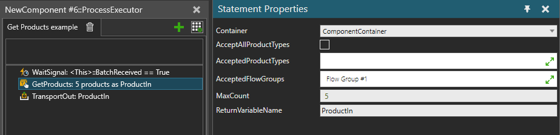

Gets references to Product Instances from a component container and stores them to a Process Variable.
Only Product Instances that match the Product Type filter are returned, and the maximum number matching of Product Instances to return can be limited using the MaxCount property.
Note that this statement simply returns references to the Product Instances that match the filter criteria. Special care must be taken to avoid duplicate references to the same Product Instances, or other logic also manipulating the Product Instances in parallel with your Process.
For example, you could accidentally retain references to Product Instances after they have moved out of the container or even to another Process. Manipulating the same Product Instances in parallel from different Processes or with other logic in parallel to Process statements is generally not supported and can result in unexpected behavior.

| Name | Description |
Container |
Component container to read the Product Instances from. |
AcceptAllProductTypes |
When selected, any Product Instance will do. |
AcceptedProductTypes |
Product Instance of any of these types will be accepted. |
AcceptedFlowGroups |
Product Instance of type belonging to any of these groups will be accepted. |
MaxCount |
An expression for maximum number of Product Instances to return. Must evaluate to an Integer value. Leaving the expression empty and evaluated negative values mean no limit. |
VariableName |
Name of the Process variable to use for storing the result. If the variable exists with correct type already, it is made into a list of Product Instances and the references are appended to it. The variable is created as a list of Product Instances if it does not exist already, even if it will be empty. |